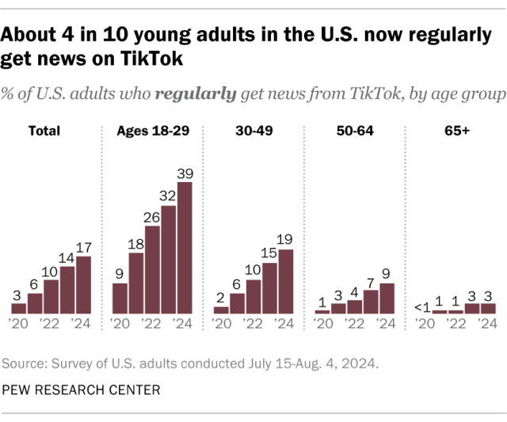
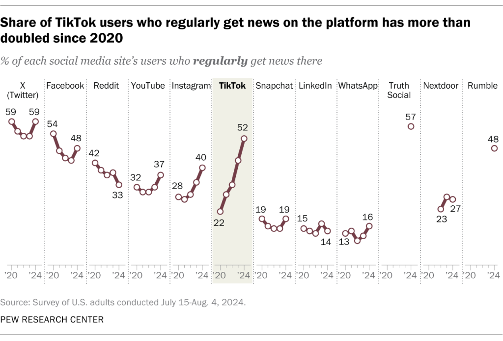

By Rebecca Leppert and Katerina Eva Matsa
A small but growing share of U.S. adults are regularly getting news on TikTok. In fact, since 2020, no social media platform we’ve studied has seen faster growth in the share of Americans who regularly turn to it for news, according to a new Pew Research Center analysis.
In just four years, the share of adults who say they regularly get news from TikTok has grown about fivefold, from 3% in 2020 to 17% in 2024.
TikTok, primarily known for short-form video sharing, is especially popular among teens – 63% of whom report ever using the platform – and young adults.
Young adults also stand out when it comes to turning to TikTok for news. Today, 39% of adults under 30 say they regularly get news there, compared with much smaller shares of adults ages 30 to 49 (19%), 50 to 64 (9%) and 65 and older (3%).
News consumption is also trending upward when looking at TikTok users, specifically. Around half of TikTok users (52%) now say they regularly get news there, up from 43% last year and just 22% in 2020. TikTok users are now more likely to get news from TikTok than Facebook users are to get news from Facebook. Still, TikTok users are less likely than users of X (formerly Twitter) to get news on the site.
Note: This is an update of a post originally published Nov. 15, 2023. Here are the questions used for this analysis, along with responses, and its methodology.